So, far, we've talked about Content List objects in terms of object definitions, but now we need to discuss object instances. The purpose of an object definition is to provide a template for how a form looks, and the data it will contain, or what order of activities a Process Timeline will follow. When a user opens a form for submission, or when a process starts, Process Director creates a copy of the object that will be used for that specific form submission, or that specific iteration of the process. Each of these copies are called an instance of the form or process.
Let's look at a form, for example. The form definition defines what fields will appear on the form, and how the form will look. In other words, the definition specifies they basic structure of all of the form that users will submit. Each individual instance of that form contains all the properties specified for the form, and will also contain all of the data entered into that form for this specific submission. So, each instance of the form contains the data for that specific form submission. Similarly, each instance of a process Timeline contains the basic structure specified in the definition, as well as all of the task start dates, due dates, etc. that occur during that specific run of the process.
All Process Director objects that support instances will display those instances in the Content List, as child objects of the object definition. For instance, a Form definition will have a node that appears in the Content List when you open the definition, named Form Instances.
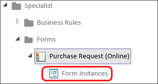
Similarly, A Process Timeline will have two nodes that appear in the Content List, Active Timelines (which show all of the Timeline instances that are currently running), and Completed Timelines (which show all of the Timeline instances that have finished).
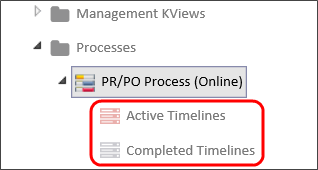
Object instances have their own properties, which are different than the properties of the object definition. Additionally, each type of instance has a set of properties unique to that instance type, e.g., the properties of a form instance are different than the properties of a Timeline instance. We'll describe the Properties of the Form and Timeline instance below.
The Object Instances page will display a list of all applicable instances in a Knowledge View. Where appropriate, the Knowledge View will contain a Name search filter and Search button to narrow the list of instances to those whose names match the search filter text.
When you click on the Form Instances node of the Content List, a list of Form instances will appear.
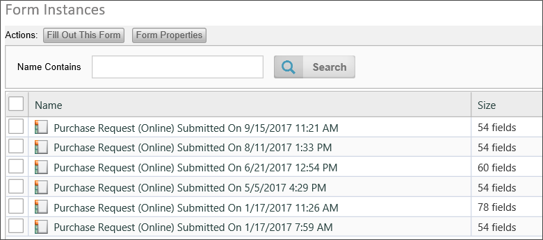
You can use the action buttons above the list of instances to open the form to fill out data by clicking the Fill Out This Form Button, and open the Form definition by clicking the Form Properties button. When you select a check box next to one of the form instances, the action buttons will change.
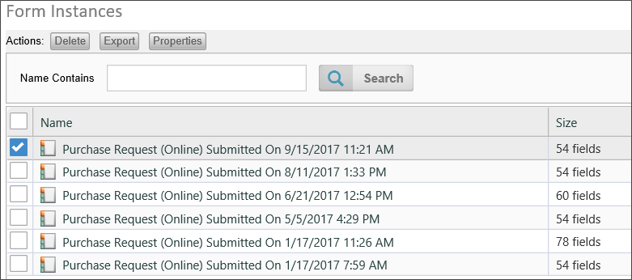
You can delete the instance by clicking on the Delete button. You can export the Form instance by clicking on the Export button. Exporting form instances is rarely done, and the use case for doing so is extremely limited. It's not a feature that you'd usually use, but there are some cases where a form can be used to provide configuration data for a process, and you may want to export the instance containing the configuration data from the Development environment to Production. Other than that, though, BP Logix doesn't recommend exporting Form instances.
Finally, you can view the properties of the Form instance by clicking the Properties button. When you open the properties screen for the Form instance, you'll see the tabbed interface common to Process Director objects. The following tabs are available for the Form instance.
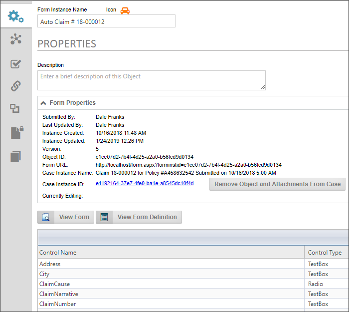
The Properties tab displays the Form Instance name and Description, along with a Form Properties section that has some basic information about the form instance, when it was created, it's ID, etc. If the instance is associated with a Case definition, the object and all of its children can be removed from the Case instance by clicking the Remove Object and Attachments from Case button. Below that is a View Form button to enable you to view the instance in it's current state, and a View Form Definition button to open the form definition.
Below that is a list of all the fields on the form, and the current values stored in each field.
The Show Parents tab displays all of the parent process objects, such as running Process Timelines or Workflows. You can check one of the processes, then click the Properties button to open the Properties screen of the process instance.
If the Form definition is configured to audit field changes, the Audit Viewer tab will display all of the field changes that have been made to the form fields, showing the old value, the new value, and the change date and time.
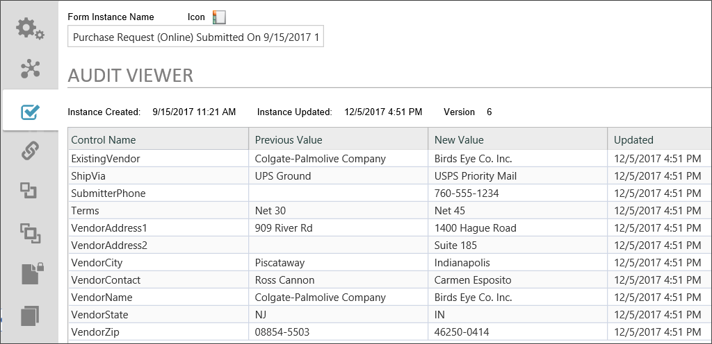
The remaining tabs of the Form instance are the common tabs used for all objects, such as Meta Data, Permissions, etc.
As mentioned previously, in the Content list, you can view either the running Timeline instances by clicking the Active Timelines node on the treeview, or you can view Timelines that have finished by clicking the Completed Timelines node. In the example below, you can see a list of completed Timeline instances.
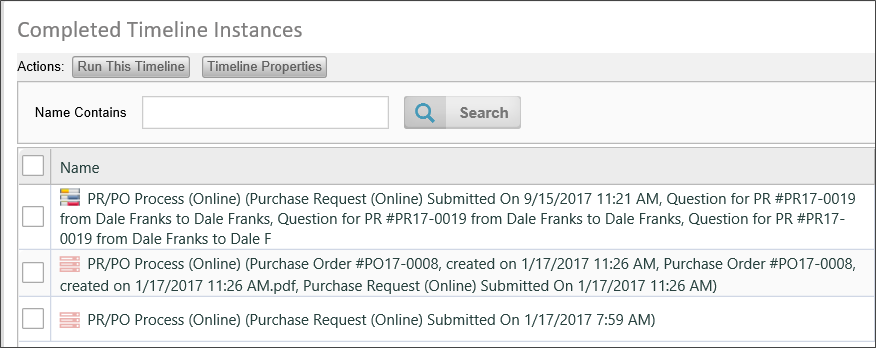
Just as with the Form instances, you can run a new instance of the Timeline by clicking the Run This Timeline button, or you can open the Timeline definition by clicking the Timeline Properties button.
If you select a Timeline instance by checking the box next to the instance name, you see a Delete button to delete the instance, and a Properties button to open the instance properties. A running Process Timeline will have an additional Cancel button that, when clicked, will cancel the running Timeline.
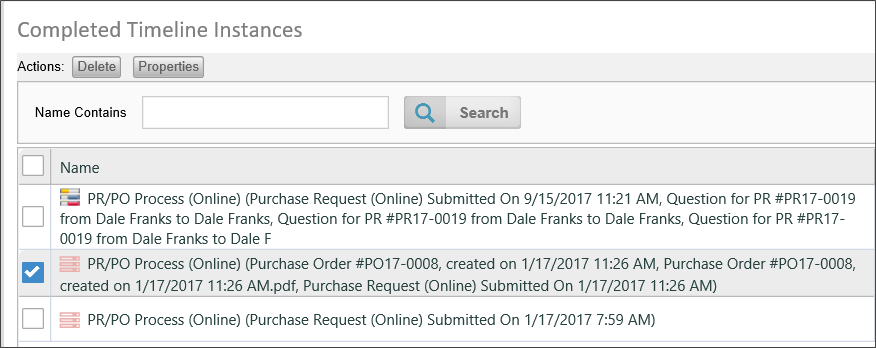
Opening the properties of the Timeline instance will display the regular tabbed interface for the instance properties.
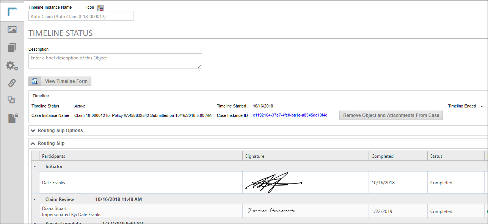
You can view the Form associated with the Timeline instance by clicking on the View Timeline Form button. If the instance is associated with a Case definition, the object and all of its children can be removed from the Case instance by clicking the Remove Object and Attachments from Case button.
The remainder of this tab displays the status of the Timeline instance, along with a Routing Slip that shows all of the activities that have occurred during the lifetime of the instance.
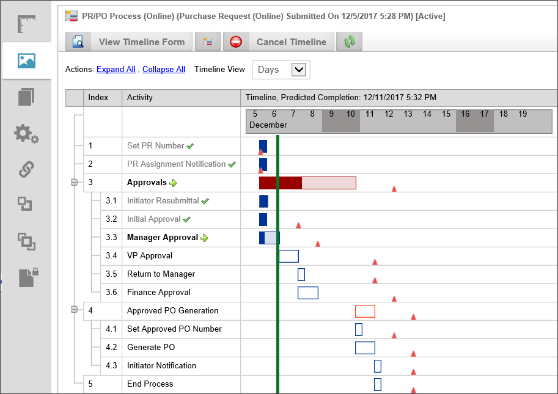
At the top of the Administration tab, there is a series of buttons.
Each of the Timeline Activities will be displayed in a Gantt chart. Completed activities will be displayed with a green check mark next to the Activity name, while the currently running activities will show a green arrow next to the Activity name. Due dates for each of the activities will be shown by red triangles, which, when moused over, will display the due date information. Each of the bars denoting the Timeline activities will also, when moused over, show the relevant information for the Activity.
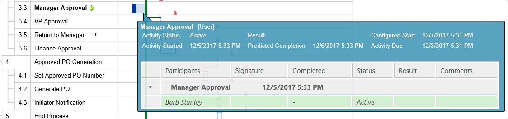
Right-clicking one of the Activity bars will open a pop-up menu that will enable you to view the properties of the Activity, cancel it, or restart it.
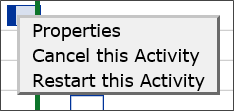
The remainder of the tabs for the Timeline instance are the common tabs available to all objects.
For more information about managing Timeline instances, please see the Managing Process Timelines topic.